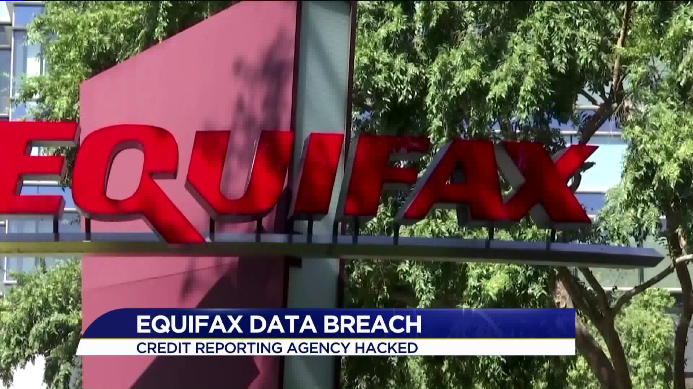

Day 30
As cybercrimes become more prevalent, it's crucial to know how to report them and what steps to take if you fall victim to one. Cybercrimes can range from phishing attacks and identity theft to ransomware and data breaches. These attacks can have severe financial and emotional consequences, but taking swift action and knowing how to report the crime can mitigate further damage and increase the chances of recovery.
One of the largest data breaches in history, the Equifax breach in 2017, exposed the personal information of over 147 million people. Hackers accessed names, Social Security numbers, birth dates, and credit card information. Victims who didn’t take action or report the incident faced increased risks of identity theft and fraud.
While the company faced legal consequences and set up a claims process for victims, many people weren’t aware of their rights or the steps to take to protect themselves. This incident highlighted the importance of reporting cybercrimes and the need for individuals to actively protect their identity in the aftermath of such breaches.